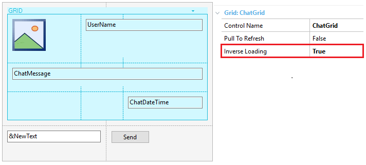

The True value, loads the grid data from bottom to top (in a common grid) and from right to left (in a Horizontal grid). Values
Description
By setting this grid property to True (its default value is False), you are able to load the grid in reverse direction (i.e. the Common Grid will be loaded from bottom to top, and the Horizontal Grid will be loaded from right to left).
How to useThe canonical use case of inverse loading on a grid is that of a chat messaging system. The following three simple steps allow the developer to define a simple chat user interface with GeneXus. 1) In order to create a simple chat user interface, drag a grid control from the toolbox to the abstract layout (with the appropriate attributes/variables for your business logic). The most important action to achieve this design is to set the Inverse loading property at the grid level to True. Lastly, the final result looks as shown below:  The developer can customize the appearance of the controls (sizes, positions, and colors) and, finally, achieve a user interface similar to the one shown below: Notes
Run-time/Design-timeThis property applies only at design-time. AvailabilityThis property is available since Genexus 15 Upgrade 10. Scope Objects: Panel for Smart Devices, Web Panel, Work With for Smart Devices |
| Backlinks | |
| AudioRecorder external object | Content Size Change property |